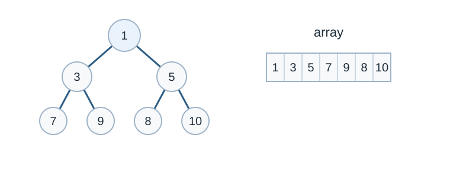

Heap
คำอธิบาย
Heap เป็นโครงสร้างข้อมูลต้นไม้ (tree) ที่มีเงื่อนไขพิเศษ และเป็น complete binary tree
โดยทั่วไปแล้ว heap มีสองประเภท
Max-Heap: ใน max heap นั้น key ที่ root จะมีค่าที่มากที่สุด และคุณสมบัตินี้เป็นจริงในทุก ๆ sub-trees
Min-Heap: ใน min heap นั้น key ที่ root จะมีค่าที่น้อยที่สุด และคุณสมบัตินี้เป็นจริงในทุก ๆ sub-trees

Min heap and array representation. Original diagram for this guide.
คุณสมบัติ
Binary Heap เป็น Binary Tree ที่มีคุณสมบัติเพิ่มเติมดังนี้
เป็น complete tree (ทุกระดับจะมีโหนดเต็มระดับยกเว้นระดับสุดท้ายซึ่งระดับสุดท้ายจะต้องมีโหนดทางซ้ายให้ได้มากที่สุด
คุณสมบัตินี้ทำให้ Binary Heap เหมาะกับการใช้ array ในการเก็บ
Binary Heap นั้นเป็น Min Heap หรือ Max Heap
ใน Min Binary Heap นั้น ค่าที่ root จะเป็นค่าที่น้อยที่สุด และคุณสมบัตินี้ต้องเป็นจริงสำหรับทุก node ใน Binary Tree
Max Binary Heap นั้นแค่เปลี่ยนจากค่าที่น้อยที่สุดเป็นมากที่สุด
Operations (Min Heap)
getMin(): คืนค่า root ของ Min Heap ได้เลย ซึ่งใช้เวลา O(1)extractMin(): นำค่าที่น้อยที่สุดใน MinHeap ออก ซึ่งใช้เวลา O(log {n}) เพราะเมื่อนำ root ออกแล้วจำเป็นต้องปรับโครงสร้างให้ตรงตามคุณสมบัติ heapdecreaseKey(): ลดค่าของโหนดที่ระบุ ซึ่งใช้เวลา O(log {n}) เพราะจำเป็นต้องปรับโครงสร้างให้ตรงตามคุณสมบัติ heapinsert(): เพิ่มโหนดใหม่ ซึ่งใช้เวลา O(log {n}) เพราะสามารถเพิ่มโหนดที่ตำแหน่งสุดท้าย แล้วค่อยปรับโครงสร้างให้ตรงคุณสมบัติ heapdelete(): ลบโหนด ซึ่งใช้เวลา O(log {n}) เพราะสามารถdecreaseKey()ให้เป็น −inf แล้วextractMin()
ตัวอย่างการ implement
implement subroutine สองฟังก์ชันคือ
jomเป็นการปรับโหนดตำแหน่งที่ระบุให้จมลงไปตามคุณสมบัติของ heaployเป็นการปรับโหนดตำแหน่งที่ระบุให้ลอยขึ้นตามคุณสมบัติของ heap
#include <bits/stdc++.h>
int d[100010] = {};
int cnt = 0, heap[100010] = {};
using namespace std;
void jom(int i) {
while (i <= cnt / 2) {
int j = i;
if (i * 2 < cnt)
if (d[heap[i * 2]] < d[heap[j]])
j = i * 2;
if (i * 2 + 1 < cnt)
if (d[heap[i * 2 + 1]] < d[heap[j]])
j = i * 2 + 1;
if (j == i)
break;
swap(heap[i], heap[j]);
i = j;
}
}
void loy(int i) {
while (i > 1) {
if (d[heap[i / 2]] > d[heap[i]]) {
swap(heap[i / 2], heap[i]);
i /= 2;
} else
break;
}
}
void insertKey(int k) {
// First insert the new key at the end
d[++cnt] = k;
heap[cnt] = cnt;
// Fix the min heap property if it is violated
loy(cnt);
}
void decreaseKey(int i, int new_val) {
d[heap[i]] = new_val;
loy(i);
}
// Method to remove minimum element (or root) from min heap
int extractMin() {
// Store the minimum value, and remove it from heap
int root = heap[1];
heap[1] = heap[cnt];
cnt--;
jom(1);
return d[root];
}
// This function deletes key at index i. It first reduced value to minus
// infinite, then calls extractMin()
void deleteKey(int i) {
decreaseKey(i, INT_MIN);
extractMin();
}
int getMin() { return d[heap[1]]; }
void printHeap() {
for (int i = 1; i <= cnt; i++) {
printf("%d ", d[heap[i]]);
}
printf("\n");
}
int main() {
insertKey(3);
insertKey(2);
printHeap();
deleteKey(1);
printHeap();
insertKey(15);
insertKey(5);
insertKey(4);
insertKey(45);
printHeap();
printf("extractMin %d\n", extractMin());
printHeap();
printf("getMin %d\n", getMin());
decreaseKey(2, 1);
printHeap();
printf("getMin %d\n", getMin());
return 0;
}